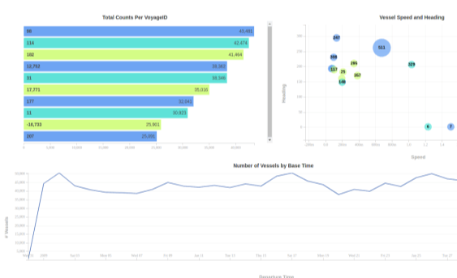

Massive trajectory datasets describing human movement and geospatial networks are produced at an unprecedented rate. The ability to utilize these voluminous data in a straightforward manner is constrained by new computational challenges. Existing software with limited processing and analytics capabilities often fail to deliver solutions to support, specifically, data driven applications employing massive trajectory data from distributed sources. Building a cost-effective, accessible, open source, and highly performing data middleware within the framework of cyberinfrastructure (CI) is hence widely desirable, to bridge the gap between complex data and domain users.
Display Points
Construct Trajectory

Interactive Visualization
View Massive Trajectory Data
Combining the power of 3D Nasa World Wind and MapD
3D Map
Geo-spatial 3D virtual globe visualization
MapD Engine
Fast, interactive, and real-time data visualization and analysis
View Trajetory Data Points
View large-scale trajectory data efficiently
Construct Trajectories from points
View the path and movements of trajectory data
Future Work
Implement spatiotemporal conditioned classification and clustering methods - besides simply implementing the methods in a parallel manner, we will examine the relationship among data characteristics, the complexity of the methods, and the performance of each method implementation, hence generalizing design principles for other advanced analysis methods for future expansion efforts.
Implement pattern summarization methods - summarizes patterns based on the raw data and results from clustering or classification.
Develop database management functions for pattern data - We will first develop functions to load, query, and update time varying graphs and associated/auxiliary pattern data. We will then define and develop interfaces for data mining as stored procedures in the database, to enable the interactions between data mining tasks and the database.